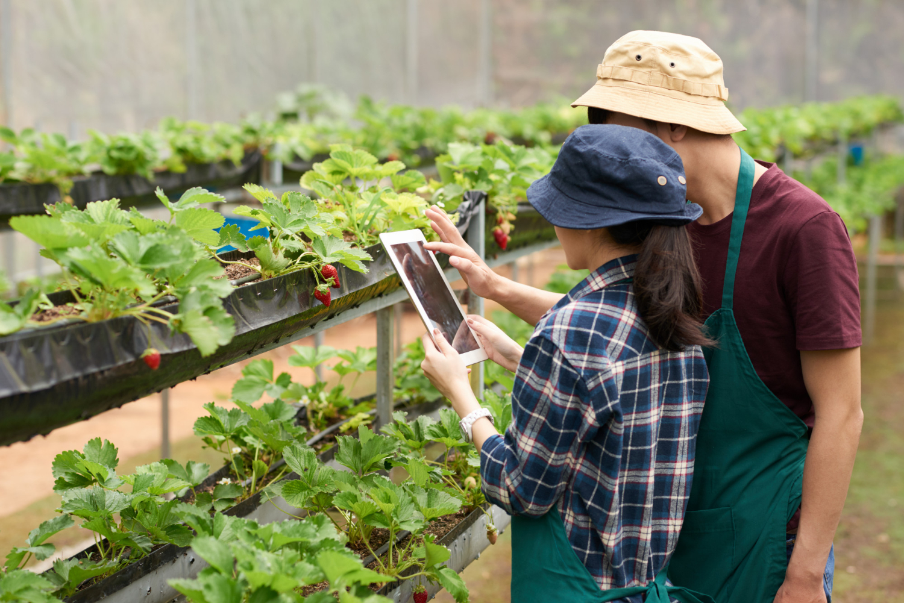

Cultivo Eficiente
Cultivo eficiente refere-se à prática de otimizar o processo de produção agrícola para obter melhores resultados com menor consumo de recursos. Envolve o uso eficiente de água, energia e insumos, além da aplicação de técnicas avançadas de manejo de culturas. O cultivo eficiente visa maximizar a produtividade, reduzir o desperdício e minimizar os impactos ambientais negativos, garantindo assim uma agricultura mais sustentável e rentável.